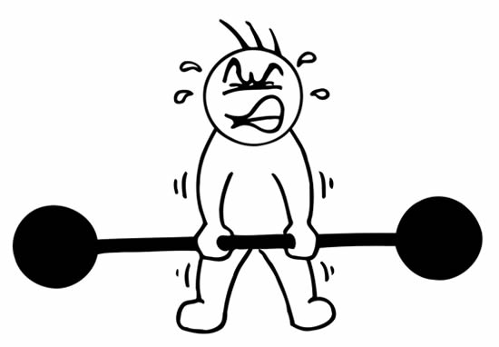

Personal SWOT Analysis
My strengths
One of my biggest strengths is being organized and managing my time well. I like staying on top of things and making sure I meet deadlines, which helps keep stress at bay. I also pick up new skills pretty quickly, especially when it comes to learning new tech or solving problems, which has been really helpful in my studies and personal projects.
My weakness
On the flip side, I do struggle with procrastination sometimes, especially when a task seems big or overwhelming. I tend to leave things until the last minute, which can create unnecessary pressure. I also have a habit of overthinking, which slows me down when I need to make decisions or finish assignments.
Opportunities
In terms of opportunities, I’m lucky to have access to some really great study spaces. Whether it’s at home or at the library, I have places where I can focus and work without distractions. Plus, with the school library and other resources coming up this year, I feel like I’m set up to succeed and make the most out of my time.
Threats
As for threats, one thing I worry about is balancing my studies with everything else in my life. It can be tricky to find enough time for school when there are so many other things going on. But I’m aware of it, and I’m trying to be more mindful about how I use my time so I can stay on track.